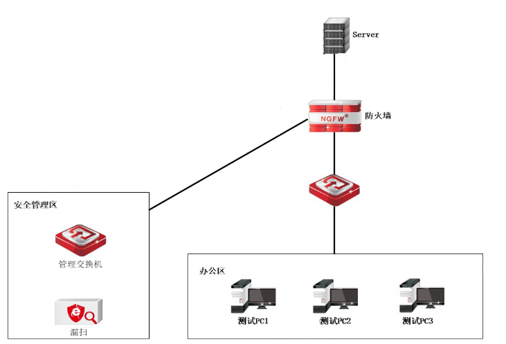
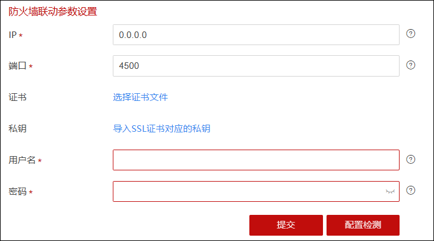

漏扫联动功能可以将漏扫设备发现的资产和漏洞信息自动上报至NGFW（资产信息显示在 资产列表 界面，漏洞相关信息显示在 总览 界面）。
NGFW支持管理员选择自动或手动方式为这些资产配置放行规则，实现只有经过漏扫设备扫描确认的资产的流量能够通过防火墙，而未经过漏扫设备扫描到的资产的流量则被防火墙阻断，最终实现快速、便捷的内部网络终端管理。
l案例需求
配置漏扫设备和防火墙联动，漏扫设备上报扫描任务的资产和相关漏洞信息，再由防火墙针对资产进行访问控制快速生成防护，只有漏扫联动生成的资产才允许通过防火墙访问服务器。

l配置步骤
ü配置NGFW
| 步骤1 | 配置基础网络（接口地址和路由），确保NGFW与漏扫设备网络连通。 |
| 步骤2 | 开放NGFW与漏扫设备的联动服务，详见 联动服务配置。 |
| 步骤3 | 开启NGFW的联动服务使能开关，配置证书与基础认证，详见 联动服务配置。 |
| 步骤4 | 开启漏扫联动开关，详见 资产发现。 |
ü配置漏扫设备
| 步骤1 | 配置基础网络（接口地址和路由），确保漏扫设备与NGFW网络连通。 |
| 步骤2 | 配置联动信息（联动设备IP地址配置为NGFW的接口IP地址，端口号配置为“4500”，用户名/密码需与NGFW的联动服务配置界面中配置的联动基础认证“用户名/密码”保持一致），导入证书和私钥，并检测联动配置是否可用，漏扫设备到防火墙的4500端口是否可达。 |

| 步骤3 | 新增系统扫描任务，新增漏扫扫描任务。 |
ü联动结果验证
登录NGFW进行结果验证。
| 步骤1 | 在 菜单中可查看漏扫设备扫描的相关漏洞信息，详见 总览。 |
| 步骤2 | 在 菜单中可查看漏扫设备扫描的资产（“资产来源”列显示为“漏扫联动”），详见 资产列表。 |
ü配置资产防护策略
1）手动方式
在 菜单中，点击资产列表“安全防护”列的“FW”图标，开启资产FW功能。开启资产FW功能后，NGFW会自动生成资产的访问控制允许策略，并自动加入到访问控制策略“默认组”中。在 菜单“默认组”中可查看自动生成的资产放行策略。
2）自动方式
在 菜单中，点击资产列表上方的“策略管理”，开启联动开关。开启联动开关后，NGFW后续会为联动扫描的资产自动生成访问控制允许策略，并自动加入到Ikage_fwgroup_default访问控制策略组中。在 菜单“Ikage_fwgroup_default”策略组中可查看自动生成的资产放行策略。